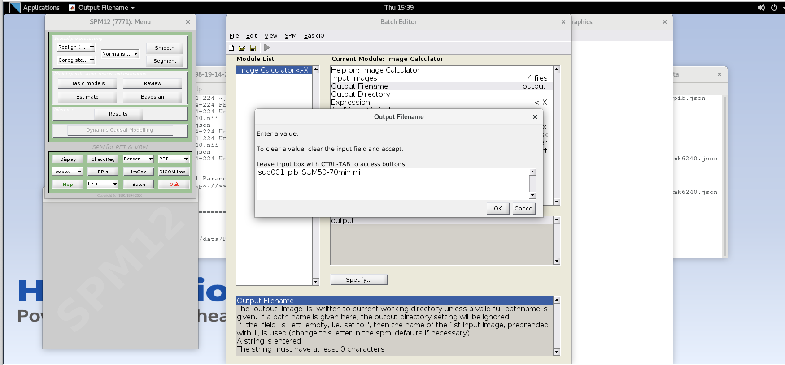
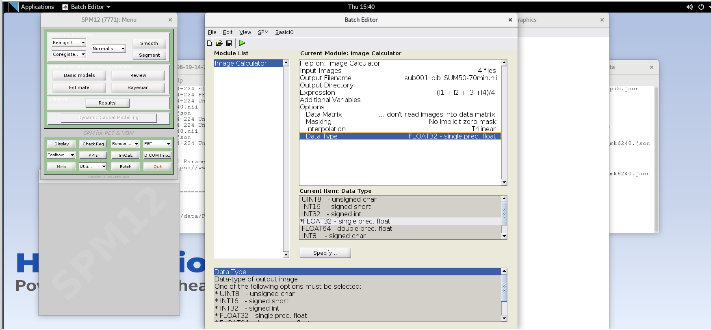

Processing and analysing PET brain images
Last updated on 2024-06-23 | Edit this page
Overview
Questions
- What does positron emission tomography measure?
- How is PET data stored and acquired?
- How can I extract key measurements of tracer uptake out of scans?
Objectives
- Describe how images are reconstructed in PET
- Explain the differences between static and dynamic acquisitions, and what information can be derived from them.
- Perform the basic processing steps involved in PET image analysis
Introduction
This tutorial is an introduction to working with PET data in the context of AD neuroimaging. Due to the limited time, we will not have time to fully recreate a typical image processing pipeline for PET data, but have included enough steps that you’ll be able to perform the minimum steps needed to generate a parametric SUVR image. The provided dataset includes T1-weighted MRI, [18F]MK-6240 tau PET and [11C]PiB amyloid PET scans for a single subject at a single timepoint. For ease, the T1-weighted image was already rigidly aligned and resliced to a 1mm isotropic image in MNI152 space. The provided PET scans were acquired using different protocols to demonstrate two common ways that PET data can be acquired. The tutorial will explain the differences between these types of acquisitions and what information can be derived from them.
Background: PET data, image processing, and quantification
PET data are collected on the scanner typically in list mode. This is quite literally a logged record of every event the scanner detects, but this type of data is not all that useful for interpretation. Viewing the images requires that the list mode data be reconstructed. The provided images have already been reconstructed with the widely-used Ordered Subset Expectation Maximization (OSEM) algorithm with common corrections (scatter, dead time, decay, etc.) already applied during the reconstruction. Notably, no smoothing was applied during the PET reconstruction.
Gaining familiarity with 4D PET data
Prepare working directory
- Open a new terminal window and navigate to the directory with the
unprocessed PET NIfTI images and data
/home/as2-streaming-user/data/PET_Imaging. - Use
lsto view the contents of this directory - Use
cdto change your working directory to the following location:bash cd /home/as2-streaming-user/data/PET_Imaging/UnprocessedData
View PET metadata
View the information in the .json file for MK-6240 and PiB images by opening the .json files for the MK-6240 and PiB images. For example, type the following into the terminal:
Open up multiple terminal windows to view the .json file contents side-by-side.
Note that the Time section differs with regard to the scant start and injection start times. Namely, the MK-6240 scan starts 70 minutes after tracer injection, whereas the PiB image starts at the same time as the scan start. The latter is often referred to as a full dynamic acquisition and enables us to calculate more accurate measurements like distribution volume ratio (DVR) and often additional parameters from the time-series data (e.g., \(R_1\) relative perfusion). If we had arterial data available, we could also use the full dynamic scan to perform kinetic modeling.
Also note the framing sequences differs between the two tracers. MK-6240 is using consecutive 5-minute frames whereas PiB starts with 2-minute frames for the first 10 minutes and then 5-minute frames thereafter.
-
For both images, the decay correction factors correspond to the scan start time (indicated by “START” in the DecayCorrected field). This may or may not have consequences for how we quantify the image. For example, if we wanted to calculate the standard uptake value \(SUV = C(t) / InjectedDose * BodyMass\),
we would need to decay correct the MK-6240 scan data to tracer injection but this is not needed to calculate SUV for the PiB scan because the scan started with tracer injection.
Now close the .json files in gedit.
View 4D PET data
- Open
sub001_pib.niiusingfsleyes. - Set the minimum threshold to 0 and the maximum threshold to 30,000 Bq/mL
- You are currently viewing individual PET frames that have not been denoised in any way. Notice the high noise level in the individual PET frames. This is why we often apply some type of denoising algorithm to the PET data before processing and quantification.
- Use your cursor to scroll around the image and observe the values in voxels in the brain. These values are activity concentrations given in \(Bq/mL\), where Bq (Becquerel) is the SI unit for radioactivity and is expressed as a rate (counts per second). In PET, the noise in the image is proportional to the inverse of the square root of the counts. Thus, the more counts detected, the less noisy the image will appear.
- Use the Volume field to advance through the PET frames from the first frame (index = 0) to the last frame (index = 16). Moving higher in volume indices is moving forward in time, like a 3D movie, as the tracer distributes throughout the brain over time. Note how the distribution of the tracer changes from the first frame to the last frame. The tracer distribution in early frames of this acquisition largely reflects the tracer perfusing the. brain tissue whereas later frames largely reflect a combination of free tracer and specific and non-specific tracer binding. You may need to adjust the upper window level to a lower value to more clearly visualize the later PET frames. You’ll also likely notice that the later frames are noisier than the beginning frames, again, this has to do with counting statistics and the reduced counts detected over time due to radioactive decay and lower tracer concentration in the brain at later timepoints.
- Close the 4D PET image in FSL by selecting the image in the Overlay list at the bottom of the page and clicking Overlay -> Remove from the menu at the top of the page.
Creating a SUM PET image
We’ll create two different SUM images from the PiB scan; one for early- and one for late-frame data to visualize the differences in tracer distribution between these timepoints more easily. The early frame data will SUM 0-20 minutes post-injection whereas the late frame will SUM 50-70 minutes post-injection. We’ll do the late-frame image first and then the early-frame image. You can reference the FrameTimeStart and FrameTimeEnd fields in the .json file to determine which frames correspond to 0-20 min and 50-70 min postinjection.
Using ImCalc to Sum Frames
Open SPM12 by typing
spm petin the command line. option.Select the
ImCalcmodule.
-
For each variable in the GUI, you will need to specify values using the
Specifybutton. Use the values specified below for each variable listed.Input Images– here we want to specify the input images that we are going to use to perform the image calculation. The order that the images are specified will determine the order they are referred to in the expression field below (e.g., the first image is i1, the second image is i2, etc.,) However, SPM will only load one frame at a time for 4D data, so each frame needs to be specified individually using the Frames field. The frame number is then delineated by the filename followed by a comma and the frame number. Note that SPM uses index 1 for the first frame, which corresponds to index 0 in FSL.Enter the frame number corresponding to the frame that spans 50-55 min post-injection (frame number 14) and hit enter. Click on the
sub001_pib.nii,14file to add this to the list.
Enter the next framenumber and similarly add it to the list. Repeat until you’ve added the last four frames of the PiB image corresponding to 50-70 min post-injection (frames 14, 15, 16, and 17). Note the order you input the images corresponds to i1, i2, … in the Expression field later. Once you’ve selected the last four frames click Done to finalize the selection.

Output Filename– enter textsub001_pib_SUM50-70min.niiOutput Directory– specify the output directory for the file. If you leave this blank, SPM will output the file in the present working directory (i.e., the directory that SPM was launched from in the command line)-
Expression– because the frames are all 5 minutes long at this part of the sequence, we can simply take the average to sum the last 20 minutes of counts.Enter the expression
Note that taking the average of these frames is equivalent to summing all of the detected counts across the frames
 . and
dividing by the total amount of time that has passed during those frames
(i.e., 20 min).
. and
dividing by the total amount of time that has passed during those frames
(i.e., 20 min). Data Matrix,Masking,Interpolationcan all use default valuesData Type– specify FLOAT32 
Verify ImCalc inputs and then run the batch by pressing the green play button at the top of the batch editor. This should create a new NIfTI file with the late-frame summed data.
-
Open the 50-70 min SUM image in FSLeyes and note the difference in noise properties vs. those you observed in a single frame. The SNR has improved because we are now viewing an image with more total counts. Notice that you can now more clearly see some contrast between the precuneus and the adjacent occipital cortex in the sagittal plane just to the left or right of mid-sagittal. You can similarly see differences in intensity between much of the cortex and the cerebellar GM, a common reference region used for amyloid PET as it typically has negligible specific binding in the cerebellum.
Do you think this person is amyloid positive or negative?
-
Repeat the above steps to generate the SUM image for the early frame data. Make sure to remove the previous volumes before adding the new volume in the Input Images. You will need to use the first seven frames corresponding to the first 20 min of data. Note that the frames are not all the same duration and a straight average is no longer equivalent to summing all of the counts and dividing by the total time. How can we use a weighted average to account for the differences in frame durations between the first five and last two frames of the first 20 minutes?
Name this file
sub001_pib_SUM0-20min.niiOpen the 0-20 min SUM image in FSLeyes and compare to the 50-70 min SUM image. Note the differences in GM/WM contrast between the images and the differences in noise properties. You will likely have to change the max intensity settings in both images to be able to observe the differences in contrast.
Close the SPM batch editor
Image Smoothing
As you can see from viewing the smoothed images, they still are quite noisy, particularly at the voxel level. In this section we’ll use a simple Gaussian smoothing kernel to reduce the voxel-level noise. We are really trading voxel variance for co-variance between voxels. This means that the activity concentration in any particular voxel will have lower variance, but will be more influenced by neighboring voxels. Thus we are degrading the spatial resolution of the image slightly to improve the noise characteristics. The size of the Gaussian smoothing kernel is typically specified as the full-width of the kernel at half the maximum value of the kernel.
Apply smoothing to SUM images
- Click on the Smooth button to launch the Smooth module in SPM and
use the following inputs:
-
Image to Smooth- Specify the two SUM images (you can do both at the same time) -
FWHM– 4 4 4 (this specified an isotropic 4 mm full-width half Gaussian smoothing kernel)
-
-
Data Type– Same -
Implicit Mask– No -
Filename prefix– ‘s’ (this prepends an “s” onto the filename to indicate the newly created image was smoothed)
- Press the green play button to run the smoothing module.
- Close the SPM batch editor.
- View the resultant smoothed images in FSL (the ones with an ‘s’ prefix in the filename). Note the reduction in voxel-level noise but also the slight reduction in spatial resolution.
Intermodal Registration
While we can quantify PET images without anatomical data like
T1-weighted MRI, we can gain considerable regional detail if we align
our PET images to an anatomical reference. This section will use SPM12’s
Coregister module to register the PET data to a T1-weighted
MRI. We’ll first view the problem in FSL to demonstrate why we need to
register the images and then perform the co-registration to align the
PET data to the T1-w MRI.
View images in FSL
- Open the
sub001_t1mri.niiand in FSL. Use the down arrow next to the Overlay list to move the T1 to the bottom of the list. Select the T1 and set the window min and max to 0 and 1,400, respectively. - Select the smoothed 50-70 min SUM PIB image in the viewer and adjust
the min and max window level to 0 and 30,000 respectively. Select the
Hot [Brain colours]colormap for the PET image. Reduce the Opacity slider down until you can see both the MRI in the background and the PET image in the foreground. - Notice that the images are not aligned. Thus, we cannot yet use the structural MRI to extract regional PET data. We first need to register the PET image to the
Coregister PET to T1-weighted MRI.
Caution: SPM will overwrite the transformation matrix in the Source Image and Other Image! As such, we will first create a safe copy of our SUM and 4D images before running the Coregistration module).
- Create copies of the smoothed late-frame SUM image and the 4D pib
image.
-
In the terminal, create a new directory called “safe” in your working directory.
-
Copy the
ssub001_pib_SUM50-70min.niiandsub001_pib.niiimages to the safe directory using the cp command in the terminal.
-
- Open the Coregistration module by selecting
Coregister (Est & Res)from the Spatial pre- processing drop down. This function will estimate the parameters needed to align the source image to the reference image, write those transformations to the NIfTI headers for those files and will create new images with the image matrices resliced to align voxel- to-voxel with the reference image.- Select
sub001_t1mri.niifor the reference image. - Select the smoothed 50-70 SUM image for the source image.
ssub001_pib_SUM50-70min.nii - Optional: if you’d like to also apply this registration to the 4D data, Select the 4D data for Other Images. You will need to enter each volume in the 4D image to apply the transformation matrix to each frame in the time series, or you can specify a subset of the frames to create a 4D image with just some frames included.
- We will use default values for
Estimation Options - In the
Reslice OptionsSet Interpolation to “Trilinear” and masking to “Mask Images”
- Select
- Press the green play button to register the PET data to MRI.
Review registration results
- In FSL, remove all of the loaded images using the Overlay>Remove All command.
- Open the T1-weighted MRI and the resliced registered SUM PET image
rssub001_pib_SUM50-70min.niiin FSLeyes. - Select the SUM image. Select the
Hot [Brain colours]colormap for the SUM PET image and set the min to 0 and max to 25,000. - Use the opacity slider to make the SUM PET image ~50% translucent.
- Scroll around in the image to view the registered SUM PET image overlayed on the T1-weighted MRI. Notice the PET image now aligns with the MRI. Also note the elevated binding in the precuneus, cingulate cortex, and frontal, parietal and temporal cortices.
- Also observe the registration accuracy by looking at features common to (i.e., mutual information) both T1-weighted MRI and PiB PET. For example, elevated non-specific PiB binding can be observed in the cerebellar peduncles (white matter) and a lack of tracer uptake is observed in the CSF filled spaces like the lateral ventricles which are also low intensity on the T1-w MRI.
- Compare the image headers for the SUM image in the safe directory
with the SUM image with the same name that was used as the source image
for registration. You can show the header info in the terminal using
fslhdor select Setting>Ortho View1>Overlay Information in FSLeyes. Notice that the sform matrix parameters have changed to reflect the spatial transformation needed to align the PET image to the T1-weighted MRI. This allows a viewer to show the PET image aligned to the T1-w image in world coordinates without having to alter the image matrix. - Now compare the image headers for the resliced SUM image
rssub001_pib_SUM50-70min.niiwith the T1-weighted MRI. The matrix size and sform matrix should be identical. This is because SPM resliced the PET image matrix such that the image matrix itself now aligns with the T1-weighted MRI, and thus no transformation in the header is needed to align the images in the viewer.
Create a standard uptake value ratio (SUVR) image
In this section, we will use the registered sum image and the T1-weighted MRI to create a cerebellum GM ROI and generate a parametric SUVR image. We’ll do all of these steps using FSL commands and functions. We’ll first create a hand-drawn ROI in the inferior cerebellum based on the MRI, and then use this mask to intensity normalize the SUM PET image and create our SUVR image. Note that we are specifically using the 50-70 min SUM image to generate the SUVR image as this is the timepoint wherein PiB has reached a pseudo “steady state” wherein binding estimates are more stable.
Create a hand-drawn cerebellum GM ROI
- In
fsleyes, turn off the PET overlay. - Turn on Edit mode by selecting Tools -> Edit Mode
- In the image viewer, navigate to the inferior portion of the cerebellar GM (~Z voxel location 30). You should be 1-2 axial planes below the inferior GM/WM boundary in the cerebellum.
- Select the T1-w MRI in the Overlay list and click the icon on the left side of the viewer that looks like a sheet of paper to create a 3D mask using the T1-w image as a reference.
- Rename the mask
rsub001_cblm_maskusing the text box on the top-left side of FSLeyes - Using the pencil and fill tools, hand draw circles in the left and right inferior cerebellum on the transaxial plane. Use the fill tool to fill in the inner part of the circle. Ensure the Fill value is set to 1. Using a Selection size of 3 voxels or greater will help draw the ROI more easily. When you’re done drawing your ROI, click the select tool to enable you to scroll around the image viewer.
- Select the mask image and save the image (Overlay -> Save) as a
new NIfTI file named
rsub001_cblm_mask.nii.
Create the SUVR Image with the inferior cerebellum reference region
For the expression, we want to divide the SUM 50-70 min pib image by the mean intensity in the cerebellum ROI that we just generated by hand. To accomplish this, we will divide the entire SUM pet image by the mean of the SUM PET image in all voxels where the cerebellum mask =1. We’ll do this in two steps using FSL.
-
In the command line, extract the mean activity concentration in the cerebellum mask using fslstats
OUTPUT
TODO: add output -
Create the SUVR image by dividing the SUM 50-70min image by the mean activity concentration output by
fslstats
View the SUVR image overlayed on the T1-w MRI
- Open the T1-weighted MRI (if not already opened) and the newly
created pib SUVR image
rssub001_pib_SUVR50-70min.niiin FSLeyes. - For the SUVR image, set the colormap to
Hot [Brain colours], set the min and max intensity window to 0 and 3, and set the opacity to ~50%. - Notice the values within the image have been rescaled and should be roughly between 0 and 3 SUVR. For interpretation, values ~>1 (plus some noise) in the gray matter indicate specific tracer binding to beta-amyloid plaques.
Test your knowledge
You have created a SUVR image for PiB, which used a dynamic
acquisition wherein the scan started at the same time as tracer
injection. Now see if you can repeat the relevant steps above to create
a SUVR image for the MK-6240 scan. You’ll need to look at the .json file
and the timing and framing information to determine which frames to SUM
to generate the SUVR image. The most commonly used MK-6240 SUVR windows
are 70-90 min or 90-110 min post-injection. For most tau tracers, the
inferior cerebellum is a valid reference region. If you run out of time
and would like to view an MK-6240 SUVR image, you can view the images in
Pay close attention to the display settings for the window and colormap.
TODo put solution here
Additional steps
In the tutorial above, some steps that would typically be included in PET processing were omitted to enable enough time to get through the tutorial and create an SUVR image during the workshop. For example, we did not include interframe alignment and did not perform any smoothing or denoising on the 4D PET data. We have included additional steps below and have also included some preprocessed PiB data using a DVR pipeline that you can compare with your SUVR image.
Interframe realignment
Interframe realignment is often included in processing 4D PET data to correct for motion between frames in a dynamic acquisition. It’s important to note that this process will not correct for motion that happens within a PET frame and will also not correct for misalignment of the emission scan and attenuation map used during the reconstruction. As such, correcting for interframe motion does not entirely account for motion that occurs during a PET scan. In cases with large amounts of motion, the reconstructed data may need to throw out bad frames or may simply be unusable. There are some approaches to correct for motion on the scanner and prior to/during reconstruction, but this is beyond the scope of this tutorial. We will use the 4D PiB data and SPM12 to perform interframe realignment, but will modify our approach to account for differences in PET frame duration and noise.
- View the problem
- In the previous tutorial, we created SUM images of the first and
last 20 minutes of the PiB acquisition. Load these images in FSLeyes.
Recall that you’ll need to use the 50-70 SUM image in the /safe
directory that did not have the coregistration transformation matrix
written to the NIfTI header. If you have not completed the tutorial, you
can load the following images that have been previously processed:
/home/as2-streaming-user/data/PET_Imaging/ProcessedTutorial/ssub001_pib_SUM0-20min.nii/home/as2-streaming-user/data/PET_Imaging/ProcessedTutorial/safe/ssub001_pib_SUM50-70min.nii
- Set the threshold for the min and max window to 0 to 35,000 for the 0-20 min SUM image and 0 to 20,000 for the 50-70 min SUM image.
- Toggle the top image on and off using the eye icon in the Overlay list. Notice the slight rotation of the head in the sagittal plane between the early and late frames. This is due to participant motion during the scan acquisition and what we are going to attempt to correct using interframe realignment.
- Close FSLeyes.
- In the previous tutorial, we created SUM images of the first and
last 20 minutes of the PiB acquisition. Load these images in FSLeyes.
Recall that you’ll need to use the 50-70 SUM image in the /safe
directory that did not have the coregistration transformation matrix
written to the NIfTI header. If you have not completed the tutorial, you
can load the following images that have been previously processed:
- Launch SPM if not already opened
- Smooth all frames of the 4D data – smoothing prior to realignment
will improve the registration by reducing voxel-level noise.
- Select the Smooth module from SPM
- Add all frames for the 4D PiB image
sub001_pib.niito the Images to smooth - Set the FWHM to an isotropic 4 mm kernel (4 4 4).
- Set the datatype to FLOAT32
- Press the green play button to execute the smoothing operation
- Close the smooth module in SPM
- View the smoothed 4D PiB image in FSLeyes.
- SUM PET frames across the 4D acquisition
For interframe realignment, we typically create an average image of the entire 4D time series to use as a reference image to align each frame. Because the PiB framing sequence has different frame durations, we cannot simply average the frames as we would in fMRI, but instead need to create a SUM image of the entire 70-minute acquisition using a weighted average.
Open the
ImCalcmodule in SPM.Specify all frames of the smoothed 4D PiB image (ssub001_pib.nii) as Input Images. Be sure to maintain the frame order on the file input.
Name the output file
ssub001_pib_SUM0-70min.nii-
For the expression, specify an equation for a frame duration-weighted average of all frames. Recall that the frame durations are stored in the .json file.
Use FLOAT32 for the Data Type
Run the module using the green play arrow.
Close the SPM
ImCalcmodule.
- Perform Interframe alignment using SPM12 realign
- Open the Realign: Estimate and Reslice module in SPM12
- Select data and click Specify
- Select Session and click Specify
- Here we will use the SUM0-70 min image as the reference for realignment. This is done by selecting this file first in the session file input list.
- Select the SUM 0-70 min PiB image, and then specify the entire smoothed 4D time series by input each of the 17 frames.
- Use default settings for all parameters except the following
- Estimation Options-Smoothing (FWHM): 7
- Estimation Options-Interpolation: Trilinear
- Reslice Options-Resliced Images: Images 2..n
- Reslice Options-Interpolation: Trilinear
- Run the module by clicking the green play icon
- Once the process has completed, the SPM graphics window will output the translation and rotation parameters used to correct for motion in each frame. Note these are small changes typically <1-2 mm translation and <2 degrees rotation.
- Close the SPM realign module
- View the resultant 4D image in FSLeyes
(
rssub001_pib.nii) using a display min and max of 0 to 30,000. Navigate in the viewer to view the sagittal plane just off mid-sagittal. Place your crosshairs at the most inferior part of the orbitofrontal cortex and advance through the PET frames. How did the realignment perform? Are you still seeing rotation in the sagittal plane between early and late frames? - Now change the max window to 100 to saturate the image and view the outline of the head. Scroll through the frames to look for any head motion across the frames. To see the difference before and after realignment, load the smoothed 4D image, saturate the image to view the head motion between frames.
Appendices 1: Filenames and descriptions
Filenames and Descriptions
Unprocessed files
(/home/as2-streaming-user/data/PET_Imaging/UnprocessedData/):
-
rsub001_t1mri.nii– T1-weighted MRI NIfTI image -
sub001_mk6240.nii– 4D [18F]MK-6240 PET NIfTI image -
sub001_pib.nii– 4D [11C]PiB PET NIfTI image -
sub001_mk6240.json– metadata for MK-6240 PET scan -
sub001_pib.json– metadata for PiB PET scan
Processed files in order of tutorial creation
(/home/as2-streaming-user/data/PET_Imaging/ProcessedTutorial/):
- PiB SUVR tutorial
-
sub001_pib_SUM50-70min.nii– PiB PET summed from 50-70 min post-injection -
sub001_pib_SUM0-20min.nii– PiB PET summed from 0-20 min post-injection -
ssub001_pib_SUM50-70min.nii– SUM50-70 min PiB image smoothed by 4mm kernel -
ssub001_pib_SUM0-20min.nii– SUM0-20 min PiB image smoothed by 4mm kernel -
rssub001_pib_SUM50-70min.nii– smoothed SUM50-70 min PiB image registered and resliced to T1-weighted MRI -
rsub001_cblm_mask.nii.gz– mask image of hand-drawn cerebellum ROI -
rssub001_pib_SUVR50-70min.nii– PiB SUVR image registered to T1-weighted MRI
-
- MK-6240 SUVR tutorial
-
sub001_mk6240_SUM70-90min.nii– PiB PET summed from 70-90 min post-injection -
ssub001_mk6240_SUM70-90min.nii– SUM70-90 min MK-6240 image smoothed by 4mm kernel -
rssub001_mk6240_SUM70-90min.nii– smoothed SUM70-90 min MK-6240 image registered and resliced to T1-weighted MRI -
rssub001_mk6240_SUVR70-90min.nii.gz– MK-6240 SUVR image registered to T1-weighted MRI
-
Processed PiB DVR in order of creation
(/home/as2-streaming-user/data/PET_Imaging/ProcessedPiBDVR/):
-
ssub001_pib.nii– smoothed 4D PiB time series -
sub001_pib_SUM0-70min.nii– PiB SUM 0-70 min -
rsub001_pib.nii– realigned 4D PiB time series -
hrsub001_pib.nii– realigned 4D PiB time series with HYPR denoising applied -
hrsub001_pib_SUM0-20min.nii– denoised PiB SUM 0-20 min used for source image in SPM coregistration to T1-weighted MRI -
cghrsub001_pib_SUM0-20min.nii– denoised PiB SUM 0-20 min image coregistered and resliced to T1-weighted MRI -
cghrsub001_pib.nii- denoised 4D PiB image coregistered and resliced to T1-weighted MRI -
cghrsub001_pib_DVRlga.nii– PiB DVR parametric image coregistered to T1-weighted MRI (Logan graphical analysis, \(t^*\)=35 min, \(k_2’\)=0.149 \(min^{-1}\), cerebellum mask reference region) - See the file descriptions earlier in the appendix for remaining descriptions of images in this directory
PiB DVR Pipeline
Smooth 4D data (3 mm) -> SUM 0-70 min for realignment reference -> Interframe Realignment -> HYPR Denoising -> SUM 0-20 min for coregistration source image -> Coregister to MRI -> Extract cerebellum GM reference region time-activity curve -> Generate parametric DVR image
Key Points
- PET Images are reconstructed from listmode data.
- The most commonly used PET tracers are sensitive to amyloid plaques and neurofibrillary tau tangles.
- Full dynamic scans are acquired from the time of injection, while static scans are acquired a fixed interval after injection when the tracer has or is approaching equilibrium
- Summing individual frames together reduces the level of noise
- SUVR images represent the relative uptake in each voxel to a reference region, where there is likely no specific binding